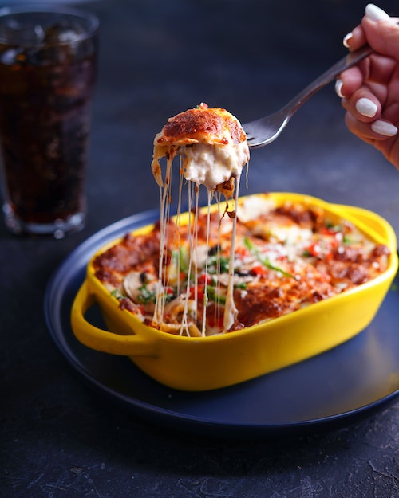

World's Best Lasagna

Description
It takes a little effort, but it'll be worth the effort.
Ingredients
- 1 lbs sweet italian sausage
- 3/4 lbs lean ground beef
- 1/2 cup minced onion
- 2 cloves garlic, crushed
- 1(28oz) can crushed tomatoes
- 2(6oz) cans tomato paste
- 2(6.5oz) cans tomato sauce
- 1/2 cup water
- 2 tbsp white sugar
- 1 1/2 tsp dried basil leaves
- 1/2 tsp fennel seeds
- 1 tsp italian sesoning
- 1 1/2 tsp salt, or to taste
- 1/4 tsp ground black pepper
- 4 tbsp chopped fresh parsley
- 12 lasagna noodles
- 16 oz ricotta cheese
- 1 egg
- 3/4 lbs mozzarella cheese, sliced
- 3/4 cup grated parmesan cheese
Steps
-
In a Dutch oven, cook sausage, ground beef, onion, and garlic over
medium heat until well browned. Stir in crushed tomatoes, tomato paste,
tomato sauce, and water. Season with sugar, basil, fennel seeds, Italian
seasoning, 1 tsp salt, pepper, and 2 tbsp parsley. Simmer, covered, for
about 1 1/2 hrs, stirring occasionally.
-
Bring a large pot of lightly salted water to boil. Cook lasagna noodles
in boiling water for 8 to 10 minutes, Drain noodles, and rinse with cold
water. In amixing bowl, combine ricotta cheese with egg, remaining
parsley, and 1/2 tsp salt.
- Preheat oven to 375 degrees F(190 degrees C)
-
To assemble, spread 1 1/2 cups of meat sauce in the bottom of a 9x3 inch
baking dish. Arrange 6 noodles lengthwise over meat sauce. Spread with
one half of the ricotta cheese mixture. Top with a third of mozzarella
cheese slices. Spoon 1 1/2 meat sauce over mozzarella , sprinkle with
1/4 cup parmesan cheese. Repeat layers, and top with remaining
mozzarella and parmesan cheese. Cover with foil(to prevent
sticking:either spray foil with cooking spray or male sure the foil does
not touch the cheese.)
-
Bake in preheated oven for 25 minutes. Remove foil, and bake an
additional 25 minutes. Cool for 15 minutes before serving.
Home